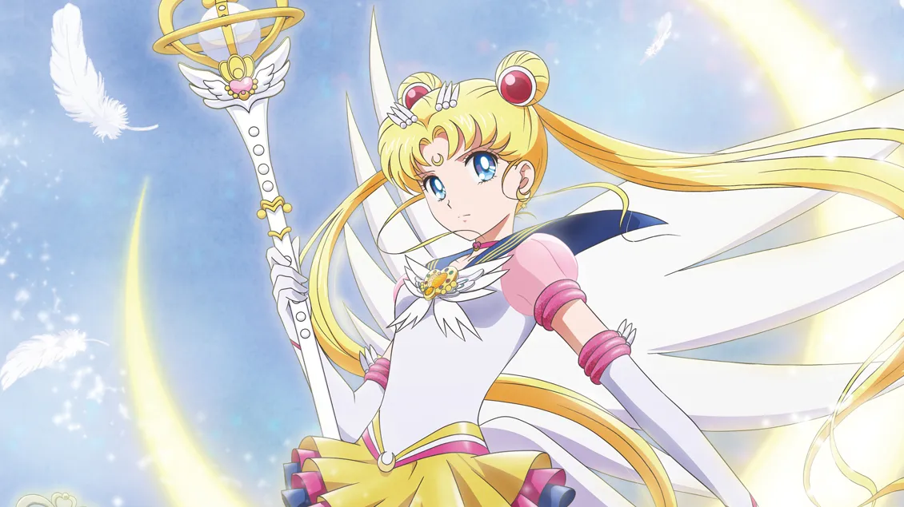

“Even when we disappear and new Sailor Guardians are born, Sailor Moon, you will always be invincible. The most beautiful shining star.”
Usagi Tsukino just a 14-year-old crybaby from Azabu-Juban...until she met a cat with a crescent moon on her
forehead named Luna. It was then that she learned that she had the power to protect the humans of Earth by transforming into the unstoppable Sailor Moon.
With the newfound powers granted by the legendary Silver Crystal, she has taken down every enemy that has threatened the safety of her friends and established
an era of peace for the entire universe. If you're planning to take over the galaxy anytime soon, be on the lookout for the one named Sailor Moon!
Notable attacks:
- Moon Tiara Action
- Moon Healing Escalation
- Moon Princess Halation
- Moon Spiral Heart Attack
- Rainbow Moon Heartache
- Moon Gorgeous Meditation
- Starlight Honeymoon Therapy Kiss
Instructions on making your own Princess Serenity/Sailor Moon:
- Be the Queen to the Moon Kingdom during the Silver Millenium.
- Get your kingdom cursed to fall by a jealous Queen Nehelnia.
- Have another evil queen, Metalia, take advantage of the curse, inciting the citizens of Earth to wage war on the Moon Kingdom.
- Win the war at the cost of your daughter and reincarnate her on Earth with the promise of a better life.
- There you have it! Your reincarnated daughter will be the most powerful warrior the galaxy has ever seen!
Back to Home